Colour and palettes in spatialdata-plot#
This tutorial covers how spatialdata-plot decides what colours to draw, and the helpers it ships for building palettes. By the end you should be able to:
Reason about where a colour comes from when you write
color=....Use
groupsto focus on a subset of categories without throwing the rest away.Build perceptually well-spaced and colourblind-safe palettes with
make_paletteandmake_palette_from_data.
We use the synthetic blobs dataset throughout so the notebook stays small and reproducible.
Setup#
import numpy as np
import pandas as pd
import matplotlib.pyplot as plt
import spatialdata as sd
import spatialdata_plot as sdp # registers the .pl accessor; also aliased for sdp.pl.make_palette below
sdata = sd.datasets.blobs()
sdata
SpatialData object
├── Images
│ ├── 'blobs_image': DataArray[cyx] (3, 512, 512)
│ └── 'blobs_multiscale_image': DataTree[cyx] (3, 512, 512), (3, 256, 256), (3, 128, 128)
├── Labels
│ ├── 'blobs_labels': DataArray[yx] (512, 512)
│ └── 'blobs_multiscale_labels': DataTree[yx] (512, 512), (256, 256), (128, 128)
├── Points
│ └── 'blobs_points': DataFrame with shape: (<Delayed>, 4) (2D points)
├── Shapes
│ ├── 'blobs_circles': GeoDataFrame shape: (5, 2) (2D shapes)
│ ├── 'blobs_multipolygons': GeoDataFrame shape: (2, 1) (2D shapes)
│ └── 'blobs_polygons': GeoDataFrame shape: (5, 1) (2D shapes)
└── Tables
└── 'table': AnnData (26, 3)
with coordinate systems:
▸ 'global', with elements:
blobs_image (Images), blobs_multiscale_image (Images), blobs_labels (Labels), blobs_multiscale_labels (Labels), blobs_points (Points), blobs_circles (Shapes), blobs_multipolygons (Shapes), blobs_polygons (Shapes)
We need a categorical column with a few levels to show off palettes. blobs ships with a 2-category genes column on the points, so we synthesise a 5-category cell_type annotation on the labels table and a region_type on blobs_polygons to exercise the column-on-element path.
rng = np.random.default_rng(0)
# Categorical on the table (annotates blobs_labels)
table = sdata.tables['table']
table.obs['cell_type'] = pd.Categorical(
rng.choice(['A', 'B', 'C', 'D', 'E'], size=table.n_obs),
categories=['A', 'B', 'C', 'D', 'E'],
)
# Categorical directly on a shapes GeoDataFrame
sdata.shapes['blobs_polygons']['region_type'] = pd.Categorical(
['stroma', 'tumour', 'stroma', 'immune', 'tumour'],
)
table.obs['cell_type'].value_counts().sort_index()
cell_type
A 5
B 4
C 4
D 6
E 7
Name: count, dtype: int64
1. Where does my colour come from?#
When you pass color= to a render_* function, spatialdata-plot resolves it in a fixed order:
Literal colour — if the string parses as a colour (hex like
'#ff0000', a named matplotlib colour, or an RGB(A) tuple), it’s used directly.Column name — otherwise it’s looked up on the element itself (the GeoDataFrame for shapes/points), then on the linked AnnData table’s
obs(orvarfor gene expression).Stored colours — for a categorical column, if no
palette=is given, the matchingadata.uns['<column>_colors']entry is honoured (the AnnData convention scanpy writes).
Because step 1 wins, a few matplotlib shorthands that commonly collide with gene or column names are deliberately rejected so they fall through to the column lookup: greyscale strings ('0', '0.5', '1'), single-letter colours ('r', 'g', 'b', …), the Cn cycle ('C0', 'C1', …), and tab:/xkcd: prefixes. A column named 'red', on the other hand, is still parseable as a colour and would be misread — rename it before plotting.
The next three cells walk through each branch.
Literal colour#
sdata.pl.render_shapes('blobs_polygons', color='#1f77b4').pl.show()
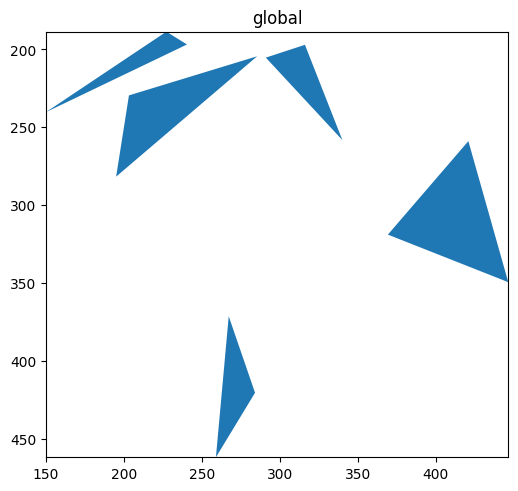
Column on the element#
region_type lives directly on the blobs_polygons GeoDataFrame. It is found there first, so no table lookup is needed.
sdata.pl.render_shapes('blobs_polygons', color='region_type').pl.show()
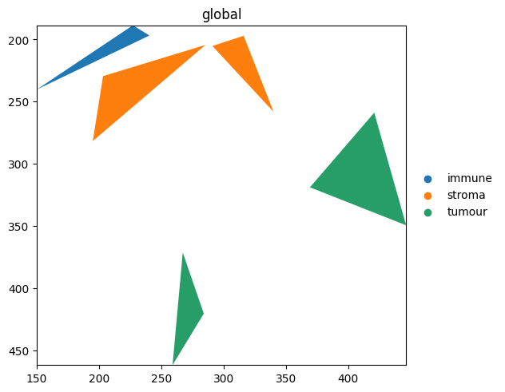
Stored colours in .uns#
If you’ve already coloured a categorical column elsewhere (e.g. in scanpy), the matching '<column>_colors' entry in .uns is honoured automatically. Setting it explicitly:
table.uns['cell_type_colors'] = ['#e41a1c', '#377eb8', '#4daf4a', '#984ea3', '#ff7f00']
sdata.pl.render_labels('blobs_labels', color='cell_type').pl.show()
print('rendered with:', table.uns['cell_type_colors'])
rendered with: ['#e41a1c', '#377eb8', '#4daf4a', '#984ea3', '#ff7f00']
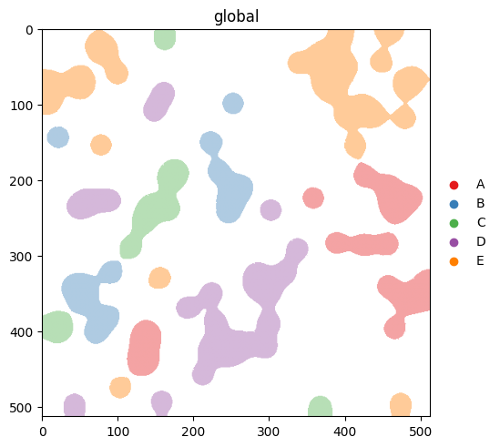
An explicit palette= argument overrides .uns. The precedence is: explicit palette= > .uns['<col>_colors'] > scanpy defaults. Compare this output with the next section, where we clear .uns['cell_type_colors'] and let the scanpy defaults take over.
2. Categorical vs continuous#
spatialdata-plot infers whether a column is categorical or continuous from its dtype. Categorical columns use palette=; continuous columns use cmap=. We clear the .uns['cell_type_colors'] we set above so this section actually exercises the scanpy fallback.
del table.uns['cell_type_colors']
(
sdata.pl.render_labels('blobs_labels', color='cell_type') # categorical -> palette
.pl.show()
)
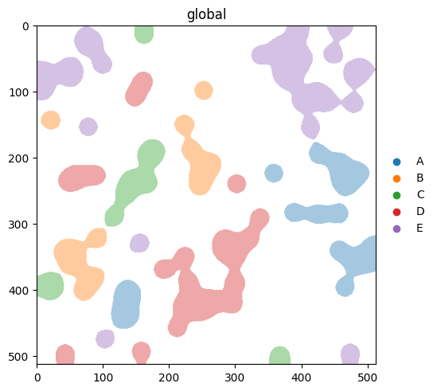
(
sdata.pl.render_images('blobs_image', channel=0, cmap='Greys_r', alpha=0.5)
.pl.render_labels('blobs_labels', color='channel_0_sum', cmap='magma') # continuous -> cmap
.pl.show()
)
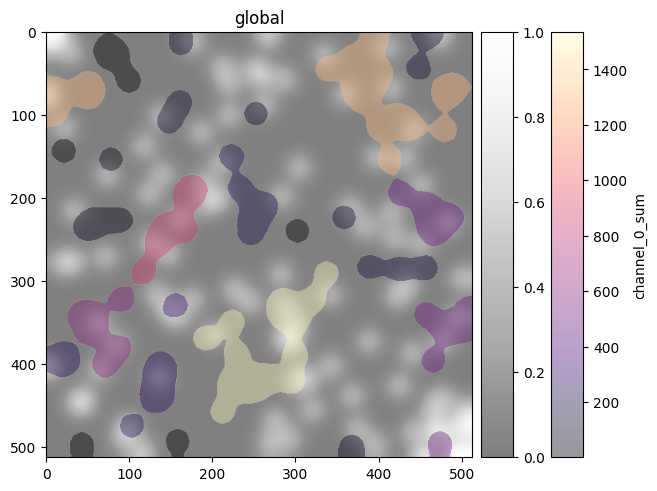
3. Focusing on a subset with groups#
groups= selects categories to highlight. As of v0.3.0, non-matching elements are hidden by default. If you’d rather see them in a neutral colour, pass na_color.
With na_color: non-group elements rendered in a neutral colour#
(
sdata.pl.render_labels(
'blobs_labels',
color='cell_type',
groups=['A', 'B'],
na_color='lightgrey',
)
.pl.show()
)
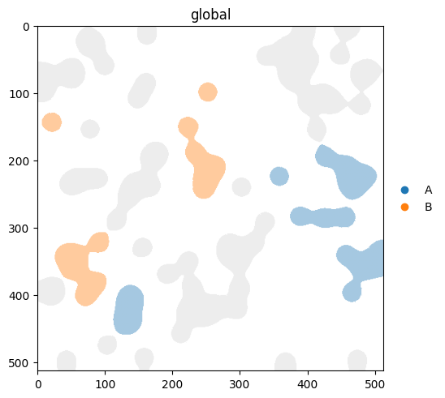
v0.3.0 note. Earlier versions rendered non-matching categories in the default NA colour by default. Now the default is to hide them, and you opt back into the old behaviour by passing
na_color. Passna_color='lightgrey'(or any colour) any time you want context, not just focus.
4. Building palettes with make_palette#
make_palette(n, palette=..., method=...) returns a list of n hex colours. Two knobs:
palettecontrols which colours are sampled. AcceptsNone(scanpy defaults), a list, a named palette like'okabe_ito', or any matplotlib colormap name.methodcontrols how they’re ordered.'default'keeps source order;'contrast'reorders for maximum pairwise perceptual distance;'colorblind'reorders for the worst-case CVD type;'protanopia'/'deuteranopia'/'tritanopia'reorder for a specific CVD type.
A small helper to inspect a palette as a strip of swatches:
def show_palette(colors: list[str], title: str = '') -> None:
fig, ax = plt.subplots(figsize=(len(colors) * 0.6, 0.8))
for i, c in enumerate(colors):
ax.add_patch(plt.Rectangle((i, 0), 1, 1, color=c))
ax.set_xlim(0, len(colors))
ax.set_ylim(0, 1)
ax.set_xticks([])
ax.set_yticks([])
ax.set_title(title, loc='left')
plt.show()
show_palette(sdp.pl.make_palette(8), 'default scanpy palette')
show_palette(sdp.pl.make_palette(8, palette='okabe_ito'), "okabe_ito (8 CVD-safe colours)")
show_palette(sdp.pl.make_palette(8, palette='tab10'), 'tab10, source order')
show_palette(sdp.pl.make_palette(8, palette='tab10', method='contrast'), "tab10, method='contrast'")
show_palette(sdp.pl.make_palette(8, palette='tab10', method='colorblind'), "tab10, method='colorblind'")
show_palette(sdp.pl.make_palette(8, palette='tab10', method='deuteranopia'), "tab10, method='deuteranopia'")
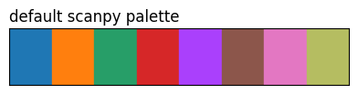
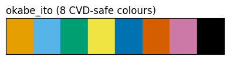
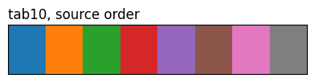
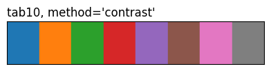
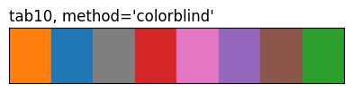
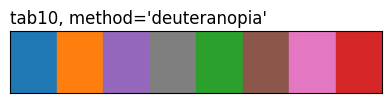
The three tab10 rows highlight what method does: same eight source colours, different ordering. 'contrast' and the CVD methods reorder by pairwise perceptual distance (under normal vision or a simulated deficiency), so the first few entries are spread further apart than they’d be in source order.
5. Palettes that already know your categories#
make_palette_from_data(sdata, element, color, ...) returns a {category: hex} dictionary you can pass straight back into a render call. Useful when you want one palette to stay consistent across multiple plots, or when the category order matters.
palette = sdp.pl.make_palette_from_data(
sdata,
element='blobs_polygons',
color='region_type',
palette='tab10',
method='contrast',
)
palette
{'immune': '#ff7f0e', 'stroma': '#2ca02c', 'tumour': '#1f77b4'}
sdata.pl.render_shapes('blobs_polygons', color='region_type', palette=palette).pl.show()
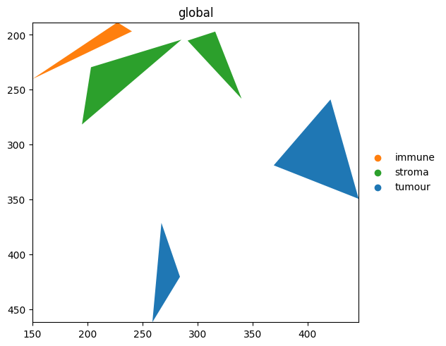
Because palette is a dict, the colour for 'tumour' is the same across every plot you reuse it in — handy for multi-panel figures.
make_palette_from_datacurrently supportsshapesandpointselements. For labels, setadata.uns['<col>_colors']or passpalette=[...]directly torender_labels.
6. Which render_* accepts what#
Function |
|
|
|
|---|---|---|---|
|
dict / list / str |
yes |
yes |
|
dict / list / str |
yes |
yes |
|
dict / list / str |
yes |
yes |
|
— (channels only) |
yes |
— |
render_images colours pixels per channel, so palette and na_color don’t apply. Pass a list of cmaps via cmap=[...] to colour individual channels.
For reproducibility#
# ruff: noqa: F401, F811, I001, E402
# fmt: off
import warnings
import dask
import spatialdata_plot
%load_ext watermark
# fmt: on
%watermark -v -m -p spatialdata,spatialdata_plot,matplotlib,numpy,pandas
Python implementation: CPython
Python version : 3.13.7
IPython version : 9.13.0
spatialdata : 0.7.3
spatialdata_plot: 0.3.4
matplotlib : 3.10.9
numpy : 2.4.4
pandas : 2.3.3
Compiler : Clang 15.0.0 (clang-1500.1.0.2.5)
OS : Darwin
Release : 25.2.0
Machine : arm64
Processor : arm
CPU cores : 8
Architecture: 64bit